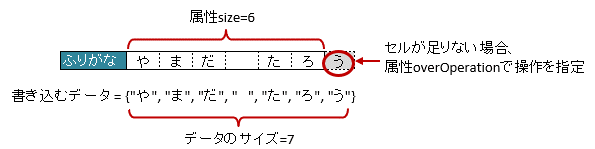

-
@Target(value={METHOD,FIELD}) @Retention(value=RUNTIME) @Documented public @interface XlsArrayOption
- 導入されたバージョン:
- 2.0
- 作成者:
- T.TSUCHIE
-
-
任意要素のサマリー
任意要素 修飾子とタイプ 任意要素と説明 XlsArrayOption.OverOperationoverOpration書き込み時にJavaオブジェクトの配列・リストのサイズに対して、属性size()の値が小さく、足りない場合の操作を指定します。XlsArrayOption.RemainedOperationremainedOperation書き込み時にJavaオブジェクトの配列・リストのサイズに対して、属性size()の値が大きく、余っている場合の操作を指定します。
-
-
-
要素の詳細
-
overOpration
public abstract XlsArrayOption.OverOperation overOpration
書き込み時にJavaオブジェクトの配列・リストのサイズに対して、属性size()の値が小さく、足りない場合の操作を指定します。@XlsSheet(name="Users") // 書き込むデータ String[] data = String[]{"や", "ま", "だ", " ", "た", "ろ", "う"}; // マッピングの定義 public class SampleSheet { // ラベルの右側 + 横方向の隣接するセル @XlsLabelledArrayCells(columnName="ふりがな", type=LabelledCellType.Right, size=6) @XlsArrayOption(overOperation=OverOperation.Error) private List<String> nameRuby; }属性overOperationの概要
- 戻り値:
XlsArrayOption.OverOperation.Breakの場合、足りないセルがあるとそこで処理を終了します。
- デフォルト:
- com.gh.mygreen.xlsmapper.annotation.XlsArrayOption.OverOperation.Break
-
-
-
remainedOperation
public abstract XlsArrayOption.RemainedOperation remainedOperation
書き込み時にJavaオブジェクトの配列・リストのサイズに対して、属性size()の値が大きく、余っている場合の操作を指定します。@XlsSheet(name="Users") // 書き込むデータ String[] data = String[]{"あ", "べ", " ", "あ", "い"}; // マッピングの定義 public class SampleSheet { // ラベルの右側 + 横方向の隣接するセル @XlsLabelledArrayCells(columnName="ふりがな", type=LabelledCellType.Right, size=6) @XlsArrayOption(remainedOperation=RemainedOperation.Clear) private List<String> nameRuby; }
属性remainedOperationの概要
- 戻り値:
XlsArrayOption.RemainedOperation.Noneの場合、余っているセルがあっても何もしません。
- デフォルト:
- com.gh.mygreen.xlsmapper.annotation.XlsArrayOption.RemainedOperation.None
-
-